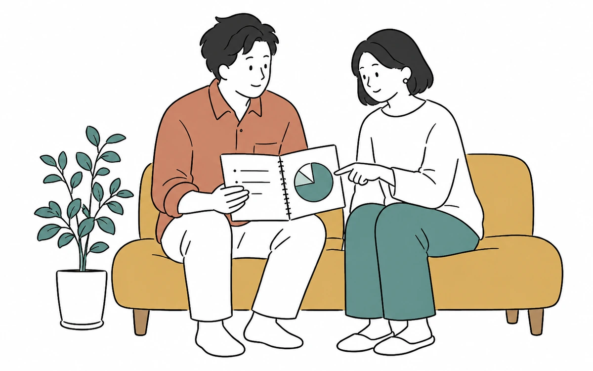
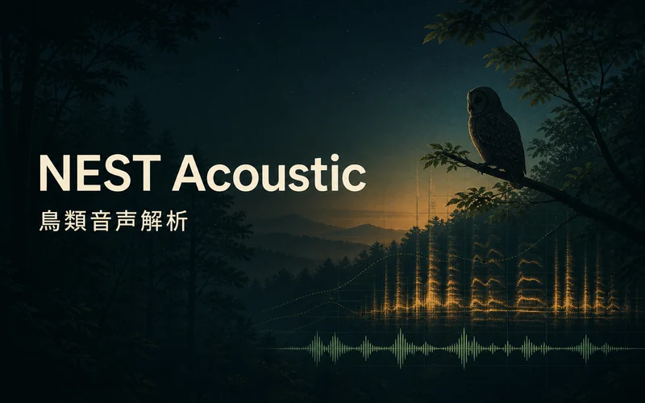

WEB SITE / TIDE DATA
しおどき
気象庁の公式推算値をもとに、全国の潮見表とタイドグラフを提供。地点検索、10分刻みの潮位、潮が動く時間帯をひとつにまとめました。
APPS / WEB / TOOLS / IDEAS
つくる、その先へ。
海から暮らし、現場、研究まで。
使う人のことを考え、形にしてきたもの。
01 / WORKS
分野も形も異なる８つの制作物。
それぞれの課題に向き合い、使えるものへ仕上げました。
WEB SITE / TIDE DATA
気象庁の公式推算値をもとに、全国の潮見表とタイドグラフを提供。地点検索、10分刻みの潮位、潮が動く時間帯をひとつにまとめました。

FISHING / 3D MAP
【製作途中】日本の沿岸を3Dで見ながら、推定等深線、潮汐、天気、周辺施設などを重ねて確認できる釣り人向け地図。

HOUSEHOLD / WEB APP
家族の家計を記録・共有し、年間の収支や将来の計画を考えるためのWebアプリ。日々の記録とライフプランをつなぎます。
CONSTRUCTION / MOBILE APP
工事写真の黒板を自由に作り、撮影時に写真へ写し込むカメラアプリ。現場での入力とオフライン利用を考えて設計しました。

WILDLIFE / AUDIO ANALYSIS
長時間録音から鳥の鳴き声を抽出し、夜間の検出と候補種を確認する音声解析アプリ。

PRESENTATION / WORKFLOW
素材から原稿と画像をつくり、編集できるHTMLやPPTXへ仕上げる制作手順とツール。途中で内容と絵柄を確かめながら進められます。
MARKET DATA / MONITORING
確定足を取り込み、トレードのセットアップを検知・記録・通知。複数の銘柄と時間足を一覧できる取引支援ツールです。
ALGORITHMIC TRADING / EA
売買シグナルの再現、通貨ペア・時間足ごとの検証、MQL5、MQL4でのEA実装、APIトレードまで取り組んだ研究・開発プロジェクト。さまざまな戦略を60種類以上制作しています。
テーマを越えて、形にする。
生活に役立つWebサービス、現場で使うアプリ、音声や地理データの解析、取引を支えるツールまで。目的に合わせて情報を整理し、実際に使える形へ落とし込んでいます。